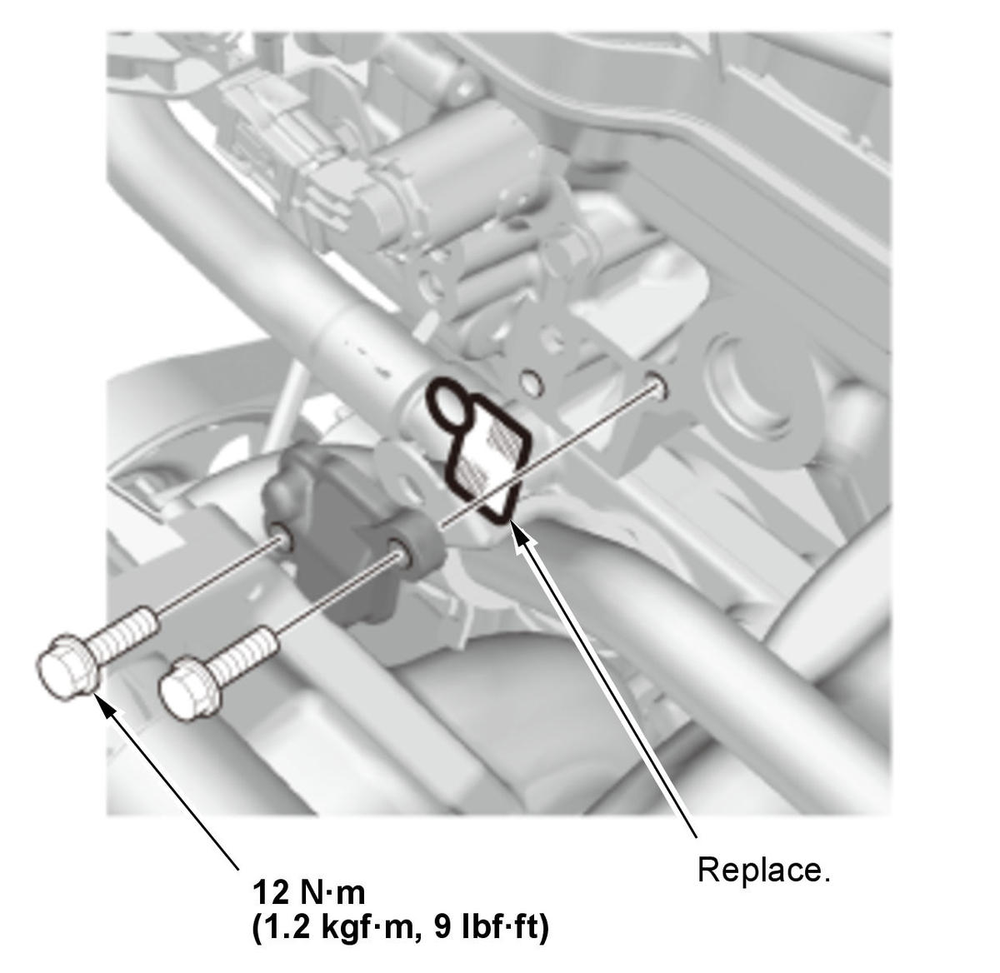

LEMON Manuals
: Even more car manuals for everyone: 1960-2025
Home
>>
Honda
>>
2016
>>
Civic LX, 4D Sedan, Automatic CVT Trans
>>
Repair and Diagnosis (Single Page)
>>
Engine Mechanical
>>
Lubrication System
>>
Lubrication System - Service Information
>>
Removal and Installation
>>
VTC Strainer Removal and Installation (K20C2)
>>
Removal and Installation
Removal and Installation
Water Passage - Remove
VTC Strainer - Remove
Fig 1: VTC Strainer Components With Torque Specifications (K20C2)

Courtesy of HONDA, U.S.A., INC.
All Removed Parts - Install
1. Install the parts in the reverse order of removal.